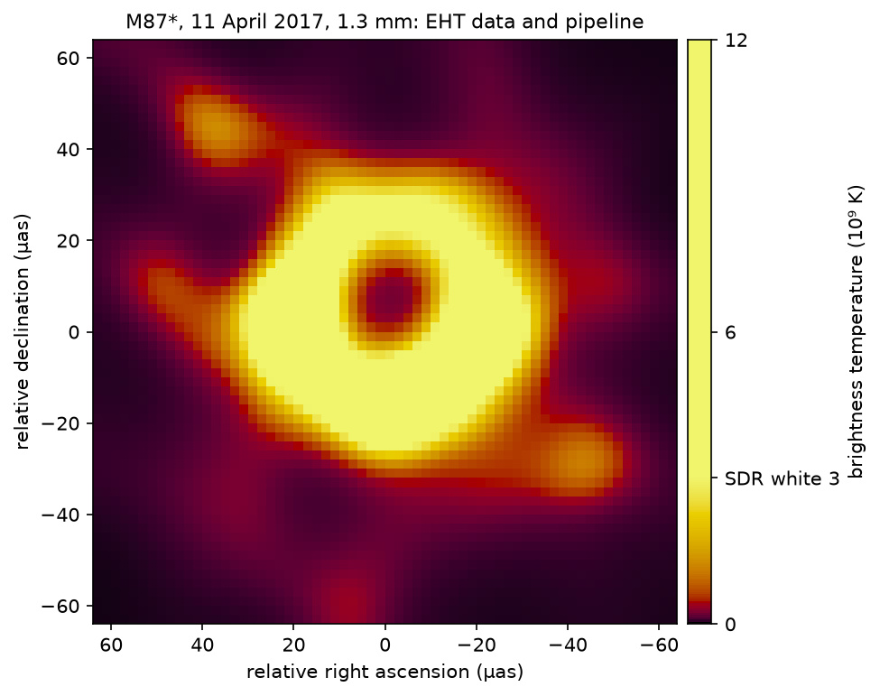

Real data · built 6 October 2026
Six real datasets, and what each one teaches
Each figure below is made from openly licensed measurements, with the data downloaded and checked against a
recorded checksum by tools/make_showcase.py. They show the two halves of the name.
Range: on an HDR screen, the values above the marked "SDR white" appear brighter than the figure's white;
on any other screen one sees the ordinary figure. Use the buttons to compare; the switch never happens on its
own.
Depth: every file here is a rendering, in the profile's terms. An 8-bit gain-map JPEG
shows the data, but its levels are too coarse to stand in for it — and each file says so, stating how much
data one stored level spans. Each HDR file declares its own mapping in its metadata: the unit, the range,
the knee and its rule, how much data one stored level spans, where the data came from, and digests that tie it
to that data and to the SDR figure beside it. udeep.read_metadata reads it back.
None of these figures is for diagnosis or for measurement.

The first gravitational wave detected: GW150914
Two black holes merging, as recorded by the LIGO Hanford detector on 14 September 2015. The picture is the power of the whitened strain in time and frequency, in units of the mean noise power.
- Knee
- 9.21 × the mean noise power: the level that noise alone exceeds once in 10,000 tiles
- Why it is valid
- In 9,216 independent noise-only tiles, 92 exceed the one-in-100 level; 92.2 are expected (± 9.6). The build stops if this check fails
- Above white
- 115 of the 4,320 tiles shown, peaking at 46.7 × the mean noise power; 2.9 % of the figure
- Noise model
- exponential (χ² with two degrees of freedom) per tile
- Data
- GWOSC, H1, 32 s at 4096 Hz · CC BY 4.0 [1, 2]
The first version of this figure used the raw strain and failed its own check: noise crossed the knee 45 times in 9,984 tiles, where one was expected. Whitening the data fixed it. A statistical knee is only as good as the noise model behind it.

The clearest gravitational wave so far: GW250114
Recorded on 14 January 2025, from two black holes of about 34 and 32 solar masses. Its network signal-to-noise ratio of 78.6 is about three times that of the first detection above. A 2026 paper in Nature reports signatures of the post-merger black hole's horizon in this signal [12].
- Knee
- the same as above: 9.21 × the mean noise power, the one-in-10,000 level
- Why it is valid
- In 95,232 independent noise-only tiles, 1,001 exceed the one-in-100 level (952 ± 31 expected), and 14 exceed the knee (9.5 expected)
- Above white
- 245 of the 4,296 tiles shown, peaking at 327 × the mean noise power
- Declared range
- 0 to 350 × the mean noise power
- Data
- GWOSC, H1, 256 s cut from a 4096 s file at 4096 Hz; all data-quality flags pass · CC BY 4.0 [1, 13]
This is where HDR has most to offer. In SDR the whole signal is one flat shape, because everything above the knee is white. The signal itself spans a factor of 35 above the knee, and that structure is what appears above white.

A chest CT, contrast-enhanced
One slice from a public lung-imaging collection, shown in the standard soft-tissue window. In SDR the contrast-filled heart chambers and vessels, and the bone, are all the same flat white. Above white, they separate.
- Knee
- 240 HU, the top of the soft-tissue window (width 400, level 40)
- Declared range
- −160 to 700 HU
- Above white
- 5.1 % of the slice; 89 % of those pixels are contrast-filled blood at 240–500 HU
- Scanner
- GE, 120 kV, standard kernel, 2.5 mm slices; 16-bit stored values
- Data
- LIDC-IDRI-0001, The Cancer Imaging Archive · CC BY 3.0 [3, 4, 5, 6]
The cost of the range, stated. The top of the range decides how the brightness above white is shared out:
| Range top | Blood, 384 HU | Bone, 663 HU | Pixels above the top |
|---|---|---|---|
| 1900 HU | 1.34 × white | 1.93 × | 0.02 % of the slice |
| 1000 HU | 1.43 × | 2.55 × | 0.11 % |
| 700 HU (used) | 1.67 × | 3.75 × | 0.22 % |
With the top at 700 HU, the 0.22 % of pixels denser than that all sit at the peak and cannot be told apart. Not for diagnosis: diagnostic display is regulated, and no clinical evidence exists for this mode.

The Sun at 171 Å
The solar corona seen by the Solar Dynamics Observatory on 7 June 2011 at 06:33 UT. Active regions are far brighter than the quiet disk.
- Knee
- 2,625 DN, the 99th percentile of the unmasked pixels. A percentile has no physical meaning, so the figure is labelled exploratory
- Masked
- 198 pixels at or above 16,383 DN, which may contain a saturated detector pixel. They are held at white
- Above white
- 0.8 % of the figure
- Stretch
- asinh, 0 to 16,383 DN
- Data
- SDO/AIA level 1.5, 1024² (each pixel a 4 × 4 sum), from the SunPy sample data · NASA, not copyrighted [7]
Why the mask matters: the brightest pixels in this image are the least trustworthy. The header reports 29 saturated pixels in the original. Lifting them above white would draw the eye to a detector limit, not to the Sun.

The Whirlpool Galaxy, from Hubble
M51 and its companion NGC 5195, from the Hubble Heritage mosaic taken with the Advanced Camera for Surveys in January 2005. This is the calibrated science image in one filter, not the colour picture.
- Knee
- 19.0 magnitudes per square arcsecond (ST system): a surface brightness, 1.17 e⁻/s per pixel
- How it is derived
- The archive's README gives the unit as electrons per second per 0.05″ pixel; with the header's calibration constant, 1 e⁻/s is 19.17 mag/arcsec²
- Above white
- 0.5 % of the pixels: the two nuclei and the brightest star-forming knots
- Declared range
- 0 to 20 e⁻/s (15.9 mag/arcsec²), asinh stretch; 43 binned pixels are brighter and sit at the peak
- Data
- HST programme 10452, filter F555W, 12,200 × 8,600 pixels, averaged 8 × 8 · MAST, public [10, 11]
Not masked, and it should be. The README says bright foreground stars are saturated. This file carries no per-pixel quality flags, so those pixels are not excluded here. The minimum-area filter keeps isolated points at white, but a conforming figure would use the mission's quality maps. The sky background is not subtracted.
Pipeline output
With the EHT's published treatment (restored to 17.1 μas)

Open this file on its own, to save it or to view it at full size.

The black hole in M87
Reconstructed here from the Event Horizon Telescope's published measurements of 11 April 2017, using the collaboration's own released imaging pipeline. Radio brightness is light, so the mapping is proportional: screen brightness is in true proportion to brightness temperature.
- White
- 3 × 10⁹ K; the peak, 1.09 × 10¹⁰ K, is 3.6 × white
- Checks
- Fit to the data: χ² 0.72 (closure phases), 0.82 (closure amplitudes), 0.96 (visibilities). Total flux 0.596 Jy. Ring radius about 18 μas, against a published diameter of 42 ± 3 μas. Centre at 10 % of the peak
- One change
- The pipeline's Fourier transform was set to
direct(exact) in place ofnfft - Data
- EHT 2019-D01-01 (ODC-PDDL) and pipeline 2019-D01-02 [8, 9]
What the three buttons show. With white at 3 × 10⁹ K, the clipped SDR figure loses the ring's structure and HDR restores it. But the third button shows an ordinary SDR figure scaled to the peak, and it shows the same structure with nothing clipped. This image spans less than 4 × above its white, so SDR is enough. HDR pays off when the range is larger, as in the CT and the galaxy.
The published treatment. In the EHT's imaging paper [9], this pipeline's image is restored with a circular Gaussian of 17.1 μas, to match the resolution of the other pipelines, and the published images are the average of three pipelines treated this way. The second row of buttons applies that restoring step. The peak falls to 6.2 × 10⁹ K, the centre fills in to 47 % of the peak, and the south stays 1.25 times brighter than the north. It is one of the three images that went into the published average: the other two pipelines need software that was not run here.
This is our run of the pipeline, not the published image. In the unrestored output, the faint knots away from the ring come from the reconstruction and should not be read as real features.
Credits and required acknowledgements
- This research has made use of data or software obtained from the Gravitational Wave Open Science Center (gwosc.org), a service of the LIGO Scientific Collaboration, the Virgo Collaboration, and KAGRA. Event data: doi:10.7935/82H3-HH23.
- R. Abbott et al. (2021). Open data from the first and second observing runs of Advanced LIGO and Advanced Virgo. SoftwareX 13, 100658. doi:10.1016/j.softx.2021.100658
- Armato III, S. G., McLennan, G., Bidaut, L., et al. (2015). Data From LIDC-IDRI [Data set]. The Cancer Imaging Archive. doi:10.7937/K9/TCIA.2015.LO9QL9SX
- Armato SG 3rd, McLennan G, Bidaut L, et al. (2011). The Lung Image Database Consortium (LIDC) and Image Database Resource Initiative (IDRI): a completed reference database of lung nodules on CT scans. Medical Physics 38, 915–931. doi:10.1118/1.3528204
- The authors acknowledge the National Cancer Institute and the Foundation for the National Institutes of Health, and their critical role in the creation of the free publicly available LIDC/IDRI Database used in this study.
- Clark, K., Vendt, B., Smith, K., et al. (2013). The Cancer Imaging Archive (TCIA): maintaining and operating a public information repository. Journal of Digital Imaging 26(6), 1045–1057. doi:10.1007/s10278-013-9622-7
- Courtesy of NASA/SDO and the AIA, EVE, and HMI science teams. File from the SunPy project's sample data.
- The Event Horizon Telescope Collaboration (2019). First M87 EHT Results: Calibrated Data (data product 2019-D01-01), described in ApJL 875, L3. doi:10.3847/2041-8213/ab0c57
- The Event Horizon Telescope Collaboration (2019). First M87 EHT Results. IV. Imaging the central supermassive black hole. ApJL 875, L4. doi:10.3847/2041-8213/ab0e85. Imaging pipelines: data product 2019-D01-02 (eht-imaging; Chael et al. 2016, 2018).
- M51 image data: NASA, ESA, S. Beckwith (STScI) and the Hubble Heritage Team (STScI/AURA); HST programme 10452. Mutchler, M., et al. (2005), AAS 37, No. 2.
- Based on observations made with the NASA/ESA Hubble Space Telescope, obtained from the data archive at the Space Telescope Science Institute (MAST). STScI is operated by the Association of Universities for Research in Astronomy, Inc., under NASA contract NAS 5-26555.
- Lu, Ma, Piccinni, Chen, et al. (2026). GW250114 reveals signatures of post-merger black-hole horizon. Nature 655, 71–75. doi:10.1038/s41586-026-10696-0
- The LIGO Scientific Collaboration, the Virgo Collaboration and the KAGRA Collaboration. Open Data from LIGO, Virgo, and KAGRA through the Second Part of the Fourth Observing Run. arXiv:2605.27090. Event catalogue: GWTC-5.0.